Spring Boot : Deploying a War file to Tomcat 8 - 2017

The picture below shows the app after deployed as war on Tomcat 8 server installed on Ubuntu 14.04.
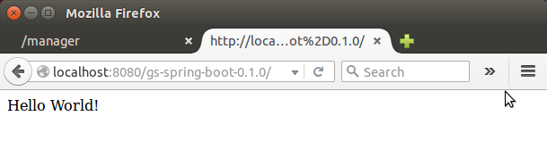Files used in this tutorial look like this:
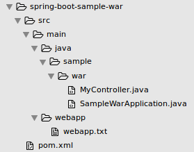We may want to skip some of the sections of this tutorial since it includes the guides for installing Tomcat 7 and 8 as well as Spring Tool Suite plugins for Eclipse. In fact, Eclipse was not used at all.
Here are the steps to install Eclipse:
- Update repostories:
- Install Java by the below command.
- Download latest eclipse from Eclipse.
- Move the downloaded package to /opt directory.
- Unzip the downloaded file.
- Create a new file eclipse.desktop in /usr/share/applications/ and add the below code.
- Now install that desktop file using the below command.
- Create a link file using the below command to open eclipse in command mode.
$ sudo apt-get update
$ sudo apt-get install openjdk-7-jdk
Or Java 8:
$ sudo add-apt-repository ppa:webupd8team/java $ sudo apt-get update $ sudo apt-get install oracle-java8-installer
$ sudo mv Downloads/eclipse-standard-kepler-SR2-linux-gtk-x86_64.tar.gz /opt/
$ cd /opt $sudo tar -xvf eclipse-standard-kepler-SR2-linux-gtk-x86_64.tar.gz
[Desktop Entry] Name=Eclipse Type=Application Exec=/opt/eclipse/eclipse Terminal=false Icon=/opt/eclipse/icon.xpm Comment=Integrated Development Environment NoDisplay=false Categories=Development;IDE; Name[en]=eclipse.desktop
$ sudo desktop-file-install /usr/share/applications/eclipse.desktop
$ sudo ln -s /opt/eclipse/eclipse /usr/local/bin/
We may want to download tools provided by Spring to get Spring Starter project in Eclipse.
The Spring Tool Suite is an Eclipse-based development environment that is customized for developing Spring applications.
It provides a ready-to-use environment to implement, debug, run, and deploy your Spring applications, including integrations for Pivotal tc Server, Pivotal Cloud Foundry, Git, Maven, AspectJ, and more.
Or we can get it from the MarketPlace of Eclipse, and I prefer this approach.
To create a new spring-boot project in sts, click new spring-starter project, that will create the project for us. New->Project->Spring->Spring starter project.
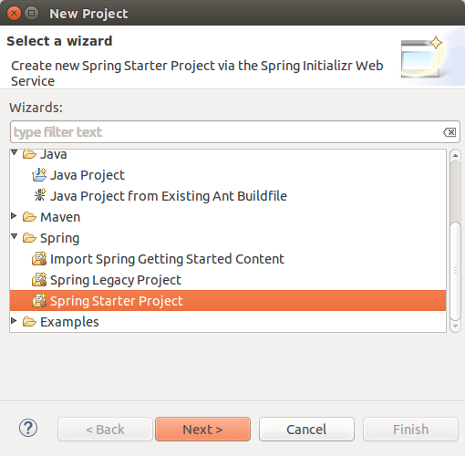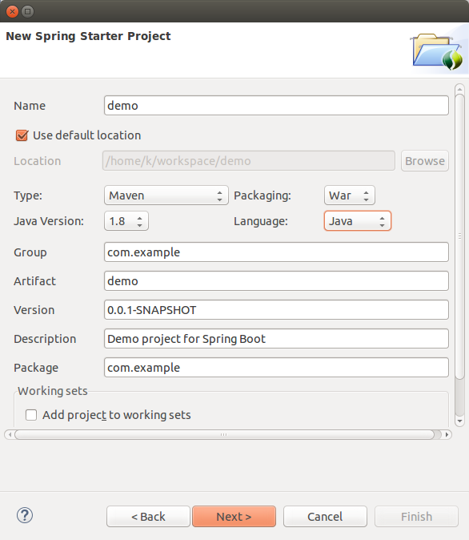

Here are the codes used in the tutorial.
Actually, I got them from spring-projects/spring-boot. Only the pom file has been slightly modified.
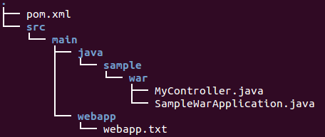
src/main/java/sample/war/MyColtroller.java:
package sample.war;
import org.springframework.web.bind.annotation.RequestMapping;
import org.springframework.web.bind.annotation.RestController;
@RestController
public class MyController {
@RequestMapping("/")
public String hello() {
return "Hello World!";
}
}
src/main/java/sample/warSampleWarApplication.java:
package sample.war;
import org.springframework.boot.SpringApplication;
import org.springframework.boot.autoconfigure.SpringBootApplication;
import org.springframework.boot.context.web.SpringBootServletInitializer;
@SpringBootApplication
public class SampleWarApplication extends SpringBootServletInitializer {
public static void main(String[] args) {
SpringApplication.run(SampleWarApplication.class, args);
}
}
pom.xml:
<?xml version="1.0" encoding="UTF-8"?>
<project xmlns="http://maven.apache.org/POM/4.0.0" xmlns:xsi="http://www.w3.org/2001/XMLSchema-instance" xsi:schemaLocation="http://maven.apache.org/POM/4.0.0 http://maven.apache.org/maven-v4_0_0.xsd">
<modelVersion>4.0.0</modelVersion>
<groupId>org.springframework</groupId>
<artifactId>gs-spring-boot</artifactId>
<version>0.1.0</version>
<packaging>war</packaging>
<description>Demo project</description>
<parent>
<groupId>org.springframework.boot</groupId>
<artifactId>spring-boot-starter-parent</artifactId>
<version>1.3.2.RELEASE</version>
</parent>
<properties>
<main.basedir>${basedir}/../..</main.basedir>
<m2eclipse.wtp.contextRoot>/</m2eclipse.wtp.contextRoot>
</properties>
<dependencies>
<!-- Compile -->
<dependency>
<groupId>org.springframework.boot</groupId>
<artifactId>spring-boot-starter</artifactId>
</dependency>
<dependency>
<groupId>javax.servlet</groupId>
<artifactId>javax.servlet-api</artifactId>
<scope>provided</scope>
</dependency>
<dependency>
<groupId>org.springframework.boot</groupId>
<artifactId>spring-boot-starter-web</artifactId>
<exclusions>
<exclusion>
<groupId>org.springframework.boot</groupId>
<artifactId>spring-boot-starter-tomcat</artifactId>
</exclusion>
</exclusions>
</dependency>
</dependencies>
<build>
<plugins>
<plugin>
<groupId>org.springframework.boot</groupId>
<artifactId>spring-boot-maven-plugin</artifactId>
</plugin>
</plugins>
</build>
<profiles>
<profile>
<id>tomcat</id>
<dependencies>
<dependency>
<groupId>org.springframework.boot</groupId>
<artifactId>spring-boot-starter-tomcat</artifactId>
<scope>provided</scope>
</dependency>
</dependencies>
</profile>
<profile>
<id>jetty</id>
<dependencies>
<dependency>
<groupId>org.springframework.boot</groupId>
<artifactId>spring-boot-starter-jetty</artifactId>
<scope>provided</scope>
</dependency>
</dependencies>
</profile>
<profile>
<id>undertow</id>
<dependencies>
<dependency>
<groupId>org.springframework.boot</groupId>
<artifactId>spring-boot-starter-undertow</artifactId>
<scope>provided</scope>
</dependency>
</dependencies>
</profile>
</profiles>
</project>
The tiny code in src/main/webapp/webapp.txt is just a line of text:
Hello WebApp
As we can see we made some changes to make it work as war:
- Changed the Maven packaging type to war.
- Added a web entry point into our application.
Note that to build a war file that is both executable and deployable into an external container we marked the embedded container dependencies as provided (63.2 Packaging executable jar and war files).
"The final step in the process is to ensure that the embedded servlet container doesn't interfere with the servlet container to which the war file will be deployed. To do so, you need to mark the embedded servlet container dependency as provided." - 80.1 Create a deployable war file
In this tutorial, we did not use Eclipse.
We can create a package as a Web application archive file, war.
Run->Maven build with install as a target.
Let's install tomcat 7.
To install Tomcat 8, please go to the next section.
Install:
$ sudo apt-get install tomcat7
We may need to tell Tomcat which Java to use in /etc/init.d/tomcat7:
JDK_DIRS="/usr/lib/jvm/default-java ${OPENJDKS} /usr/lib/jvm/java-8-oracle"
Start the Tomcat:
$ sudo service tomcat7 restart
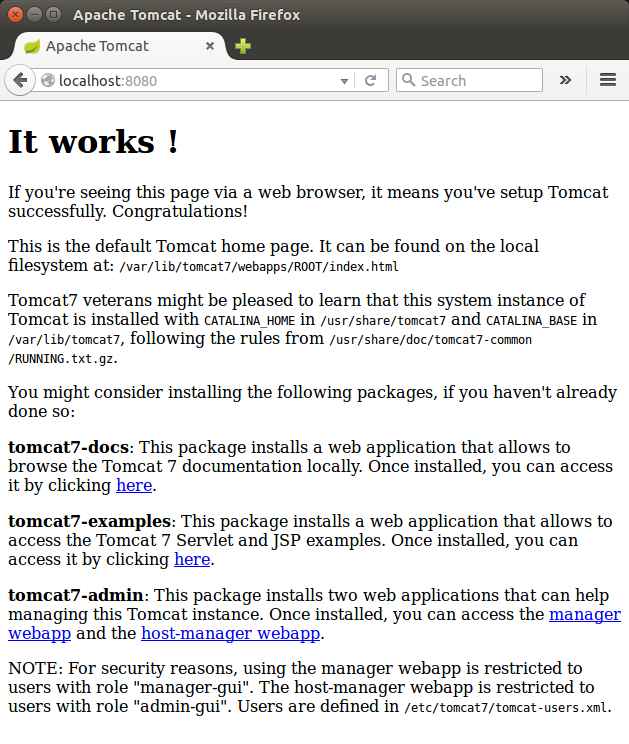
As we can see, $CATALINA_HOME/webapps/ROOT/ is the server's Web Root, and in it we have an index.html.
We may want to install additional package including admin:
$ sudo apt-get install tomcat7-docs tomcat7-admin tomcat7-examples
In order to use the manager webapp just installed, we need to add a login to our Tomcat server by editing the /etc/tomcat7/tomcat-users.xml file:
<tomcat-users>
<user username="admin" password="password" roles="manager-gui,admin-gui"/>
</tomcat-users>
Restart the Tomcat:
$ sudo service tomcat7 restart
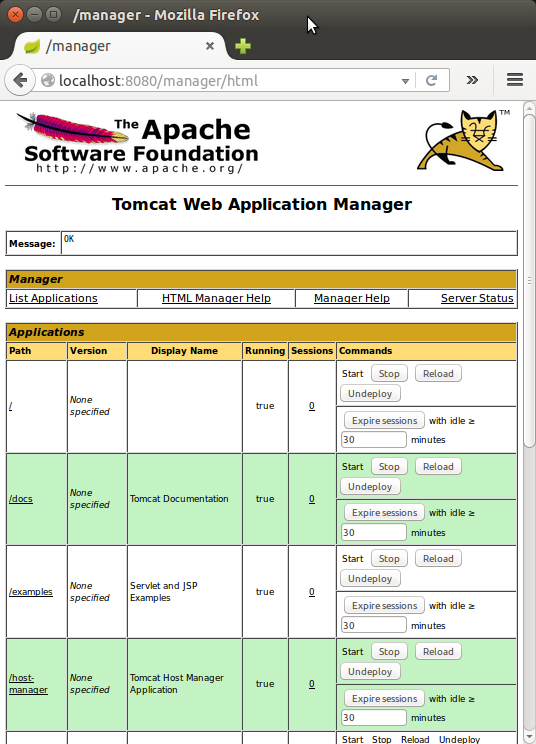
Virtual Host Manager:
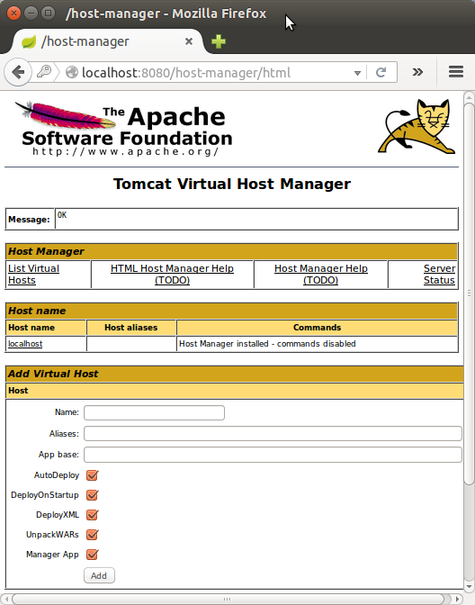Let's create a tomcat user, which will be used to run the Tomcat service.
Tomcat should be run as an unprivileged user, so we need to create a new user and group that will run the Tomcat service.
First, create a new tomcat group:
$ sudo groupadd tomcat
Then, let's create a new tomcat user. We'll make this user a member of the tomcat group, with a home directory of /var/lib/tomcat8 (where we will install Tomcat 8), and with a shell of /bin/false (so nobody can log into the account):
$ sudo useradd -s /bin/false -g tomcat -d /var/lib/tomcat8 tomcat
Here is the result that we can check from /etc/passwd:
tomcat:x:1002:1002::/var/lib/tomcat8:/bin/false
Now that our tomcat user is set up, let's download and install Tomcat.
We can get the Tomcat 8 from Tomcat 8 Downloads:
$ wget http://mirrors.ibiblio.org/apache/tomcat/tomcat-8/v8.0.32/bin/apache-tomcat-8.0.32.tar.gz
After the download completes, move the file into a proper location:
$ sudo mkdir -p /var/lib/tomcat8 $ sudo tar xvf apache-tomcat-8*tar.gz -C /var/lib/tomcat8 --strip-components=1
To set JAVA_HOME, we may want to check where it's installed:
$ sudo update-alternatives --config java There is only one alternative in link group java (providing /usr/bin/java): /usr/lib/jvm/java-8-oracle/jre/bin/java Nothing to configure.
Now, let's set the environment variables in .bashrc:
export JAVA_HOME=/usr/lib/jvm/java-8-oracle export CATALINA_HOME=/var/lib/tomcat8
make the changes effective by running the following command:
$ source ~/.bashrc
Tomcat and Java should now be installed and configured on our server.
To activate Tomcat, run the following script (Ubuntu):
$ sudo $CATALINA_HOME/bin/startup.sh
We should get a result something like this:
Using CATALINA_BASE: /var/lib/tomcat8 Using CATALINA_HOME: /var/lib/tomcat8 Using CATALINA_TMPDIR: /var/lib/tomcat8/temp Using JRE_HOME: /usr/lib/jvm/java-8-oracle Using CLASSPATH: /var/lib/tomcat8/bin/bootstrap.jar:/var/lib/tomcat8/bin/tomcat-juli.jar Tomcat started.
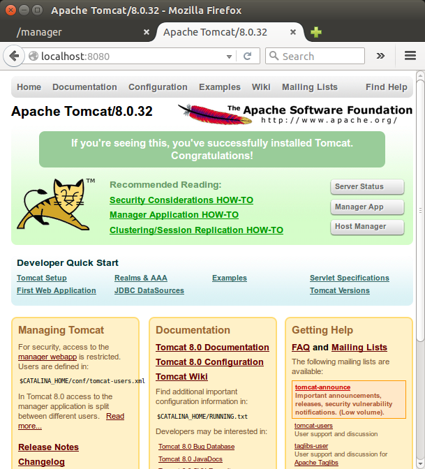
Let's setup proper permissions.
$ cd /var/lib/tomcat8 $ sudo chgrp -R tomcat conf $ sudo chmod g+rwx conf $ sudo chmod g+r conf/*
Then, let's make the tomcat user the owner of the work, temp, logs, and webapps directories:
$ sudo chown -R tomcat work/ temp/ logs/ webapps/
Now that we setup the proper permissions, let's create an Upstart script (/etc/init/tomcat.conf):
description "Tomcat Server"
start on runlevel [2345]
stop on runlevel [!2345]
respawn
respawn limit 10 5
setuid tomcat
setgid tomcat
#env JAVA_HOME=/usr/lib/jvm/java-7-openjdk-amd64/jre
env JAVA_HOME=/usr/lib/jvm/java-8-oracle/jre
env CATALINA_HOME=/var/lib/tomcat8
# Modify these options as needed
env JAVA_OPTS="-Djava.awt.headless=true -Djava.security.egd=file:/dev/./urandom"
env CATALINA_OPTS="-Xms512M -Xmx1024M -server -XX:+UseParallelGC"
exec $CATALINA_HOME/bin/catalina.sh run
# cleanup temp directory after stop
post-stop script
rm -rf $CATALINA_HOME/temp/*
end script
The init script tells the server to run the Tomcat service as the tomcat user, and it also enables Tomcat to run when the server is started.
Now let's reload the Upstart configuration, so that we can use our new Tomcat script:
$ sudo initctl reload-configuration
We can check if it's working via http://localhost:8080/.
As a final step, let setup a configuration for Web Management Interface.
In order to use the manager webapp that comes with Tomcat, we must add a login to our Tomcat server. We will do this by editing the /var/lib/tomcat8/conf/tomcat-users.xml file which is filled with comments which describe how to configure the file. We may want to add a user who can access the manager-gui and admin-gui (webapps that come with Tomcat).
<role rolename="manager-gui"/> <role rolename="admin-gui"/> <user username="admin" password="s3cret" roles="manager-gui,admin-gui"/>
Restart the Tomcat service:
$ sudo initctl restart tomcat
To run Tomcat as a service in CentOS 7, we may want to edit /etc/systemd/system/tomcat.service file something like this:
# Systemd unit file for tomcat [Unit] Description=Apache Tomcat Web Application Container After=syslog.target network.target [Service] Type=forking Environment=JAVA_HOME=/usr/lib/jvm/java-1.7.0-openjdk-1.7.0.95-2.6.4.0.el7_2.x86_64/jre Environment=CATALINA_PID=/var/lib/tomcat8/temp/tomcat.pid Environment=CATALINA_HOME=/var/lib/tomcat8 Environment=CATALINA_BASE=/var/lib/tomcat8 Environment='CATALINA_OPTS=-Xms512M -Xmx1024M -server -XX:+UseParallelGC' Environment='JAVA_OPTS=-Djava.awt.headless=true -Djava.security.egd=file:/dev/./urandom' ExecStart=/var/lib/tomcat8/bin/startup.sh ExecStop=/bin/kill -15 $MAINPID User=tomcat Group=tomcat [Install] WantedBy=multi-user.target
The script tells the server to run the Tomcat service as the tomcat user. Then, we can reload systemd to load the Tomcat unit file:
$ sudo systemctl daemon-reload
Now we can start the Tomcat service with this systemctl command:
$ sudo systemctl start tomcat
If we want to enable the Tomcat service on server boot by running this command:
$ sudo systemctl enable tomcat
Creating war file via command should look like this:
$ mvn clean install
The directory for per-instance configuration files and webapps is defined in /etc/init.d/tomcat8:
# Directory for per-instance configuration files and webapps CATALINA_BASE=/var/lib/$NAME
where the $NAME is tomcat8.
So, we want to put our war file into the webapps directory. We can just copy the generated war file by Maven install in Eclipse to Tomcat's Web Root:
$ sudo cp gs-spring-boot-0.1.0.war /var/lib/tomcat8/webapps
Or we can use Tomcat Application Manager:
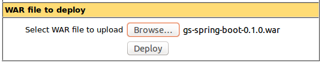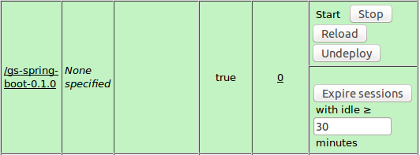
Here is the directory structure of /var/lib/tomcat8/webapps:
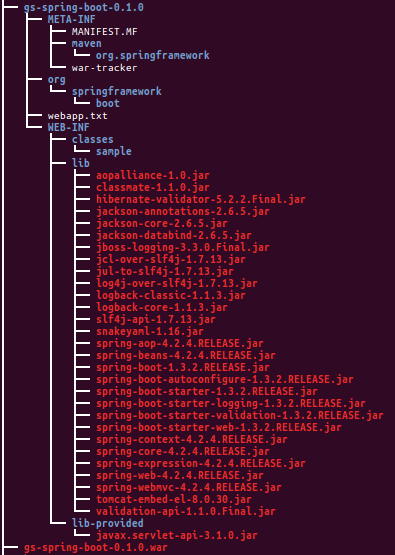As shown in the introduction, we got the following from Tomcat 8 server:
Quite a few Spring-boot samples have been failing at Tomcat deploy stage. Here is another one that was successful. The source code is available from spring-boot-thymeleaf.
Related to the missing web.xml, we need to add couple of lines to the pom file to make it deployable to Tomcat:
<build>
<plugins>
<plugin>
<groupId>org.springframework.boot</groupId>
<artifactId>spring-boot-maven-plugin</artifactId>
</plugin>
<plugin>
<groupId>org.apache.maven.plugins</groupId>
<artifactId>maven-war-plugin</artifactId>
<configuration>
<failOnMissingWebXml>false</failOnMissingWebXml>
</configuration>
</plugin>
</plugins>
</build>
Once the pom.xml modified, to get the war file issue the following mvn command:
$ mvn clean install
After deployed to the Tomcat:
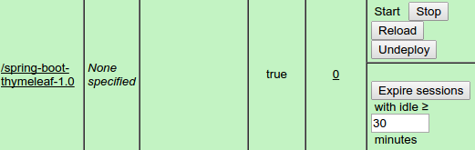it looks like this:
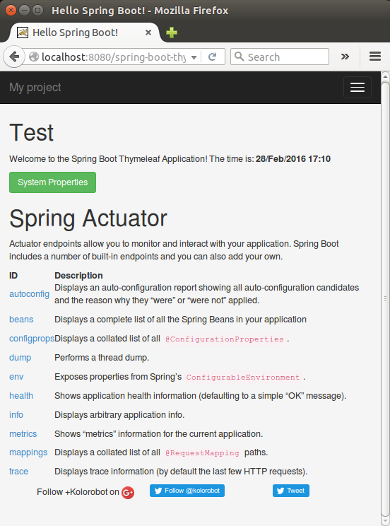To setup proxy, please visit How to Setup Apache as Reverse Proxy for Tomcat Server using mod proxy.
Here is my production site (moved to xqueeze.com) on VPS using Apache Proxy:
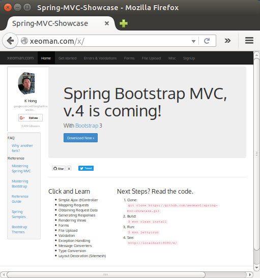As discussed earlier, the domain name has been changed to xqueeze.com:
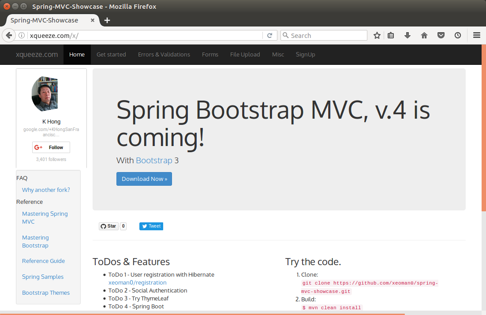To restart tomcat8 when it's not running, I set a cron job running /var/lib/tomcat8/cron/launch.sh as root:
#!/bin/bash ps -ef | grep catalina.startup.Bootstrap | grep -v grep > /dev/null if [ $? != 0 ] then echo "tomcat is not running..." systemctl start tomcat > /dev/null else echo "tomcat is running..." fi
Cron runs every minute:
[root@sf ~]# crontab -e * * * * * /var/lib/tomcat8/cron/launch.sh
Ph.D. / Golden Gate Ave, San Francisco / Seoul National Univ / Carnegie Mellon / UC Berkeley / DevOps / Deep Learning / Visualization